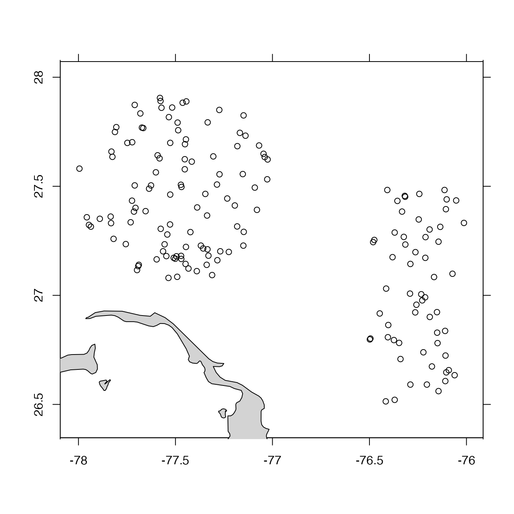

Merge argoFloats Indices
# S4 method for argoFloats
merge(x, y, ...)two argoFloats objects of type index, e.g. as created by getIndex().
optional additional objects like x and y.
An argoFloats object of type index.
library(argoFloats)
data(index)
# Index of floats within 50km of Abaca Island
C <- subset(index, circle=list(longitude=-77.5, latitude=27.5, radius=50))
#> Kept 104 cycles (10.3%)
# Index of floats within a rectangle near Abaca Island
lonRect <- c(-76.5, -76)
latRect <- c(26.5, 27.5)
R <- subset(index, rectangle=list(longitude=lonRect, latitude=latRect))
#> Kept 59 cycles (5.85%)
RC <- merge(C, R)
# \donttest{
plot(RC, bathymetry=FALSE)

# }